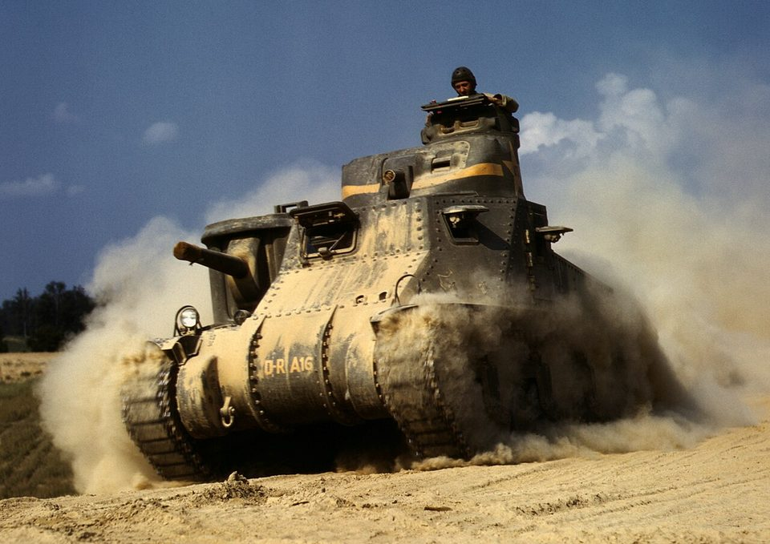
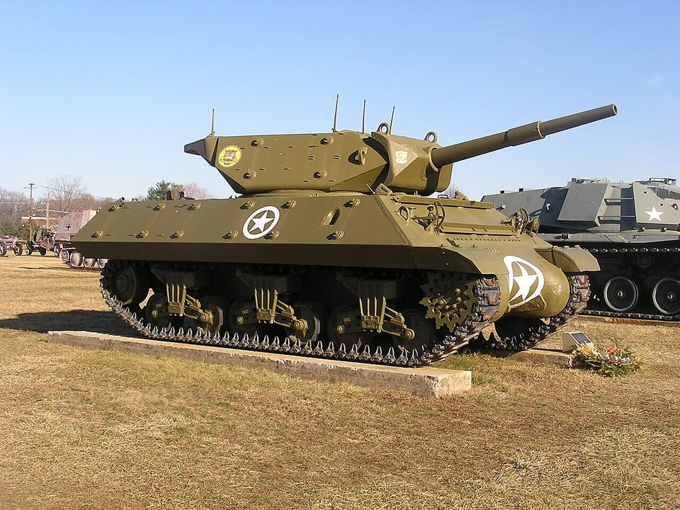
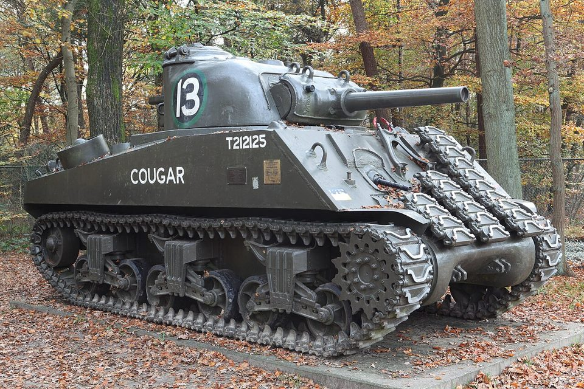
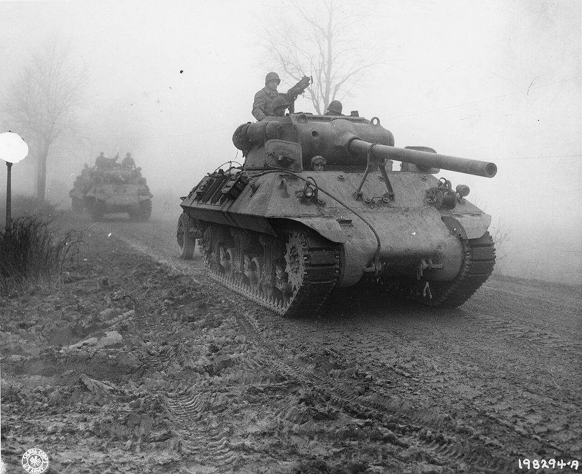
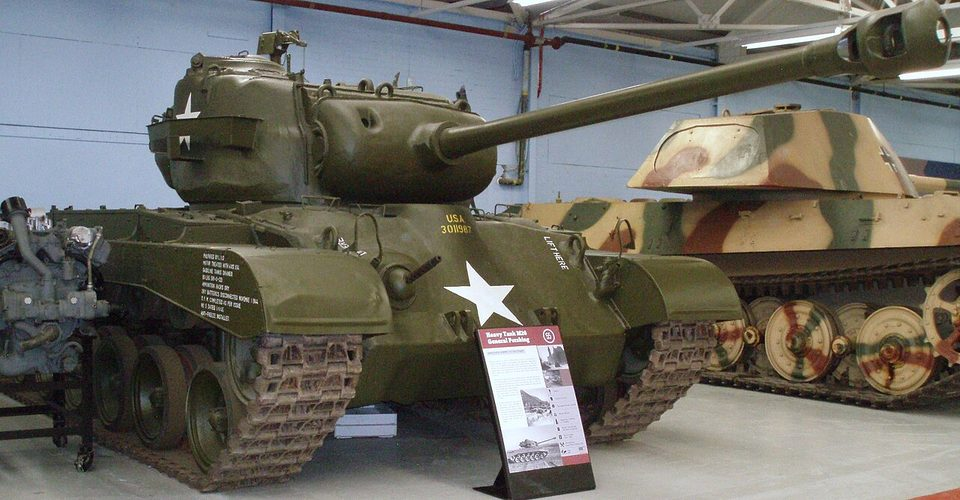

Todos los tanques › Por país › Estados Unidos
Tanques de Estados Unidos
La industria estadounidense produjo carros en cantidades enormes durante la Segunda Guerra Mundial y equipó a medio mundo durante la Guerra Fría.
Segunda Guerra Mundial
1939–1945 · 9 fichas-

Estados Unidos · 1941M3 Lee
Carro medio
-
Estados Unidos · 1941
M3 y M5 Stuart
Carro ligero
-

Estados Unidos · 1942M10
Cazacarros
-

Estados Unidos · 1942M4 Sherman
Carro medio
-
 Estados Unidos · 1943
Estados Unidos · 1943M18 Hellcat
Cazacarros
-
Estados Unidos · 1944
M24 Chaffee
Carro ligero
-

Estados Unidos · 1944M36
Cazacarros
-

Estados Unidos · 1945M26 Pershing
Carro pesado
-
 Estados Unidos · 1945
Estados Unidos · 1945T28
Prototipo de carro superpesado
Guerra Fría
1946–1991 · 8 fichas-
 Estados Unidos · 1951
Estados Unidos · 1951M47 Patton
Carro medio
-
 Estados Unidos · 1952
Estados Unidos · 1952M48 Patton
Carro medio
-
 Estados Unidos · 1953
Estados Unidos · 1953M41 Walker Bulldog
Carro ligero
-
 Estados Unidos · 1957
Estados Unidos · 1957M103
Carro pesado
-
 Estados Unidos · 1959
Estados Unidos · 1959M60
Carro de combate principal
-
 Estados Unidos · 1967
Estados Unidos · 1967M551 Sheridan
Carro ligero aerotransportable
-
 Estados Unidos · 1967
Estados Unidos · 1967MBT-70
Prototipo de carro de combate principal
-
 Estados Unidos · 1980
Estados Unidos · 1980M1 Abrams
Carro de combate principal